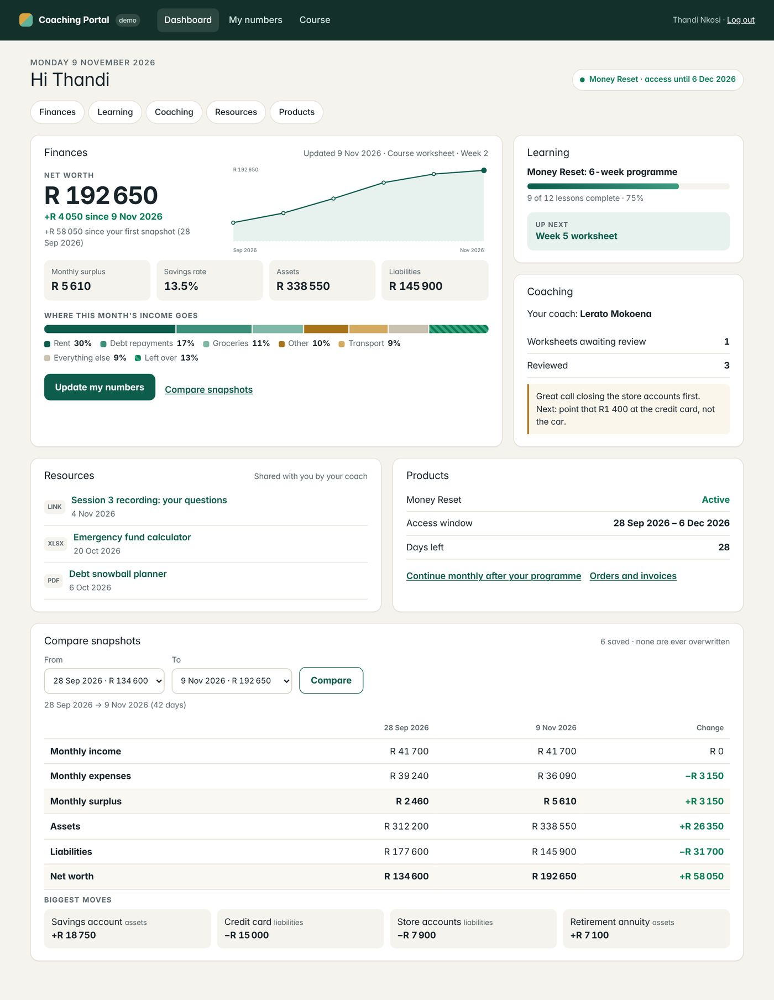
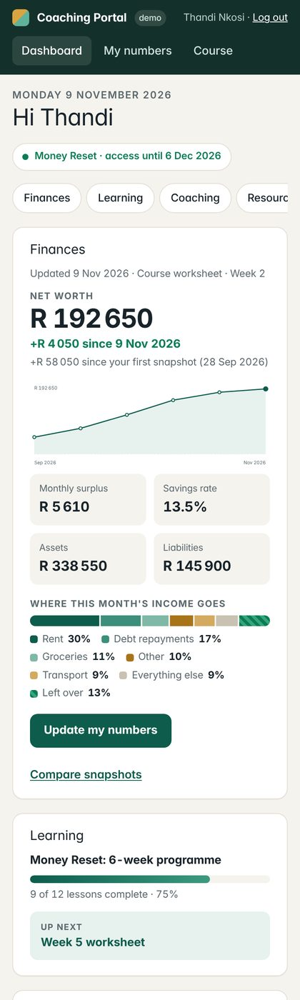
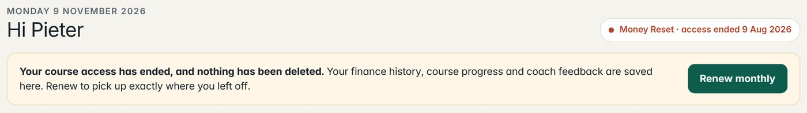
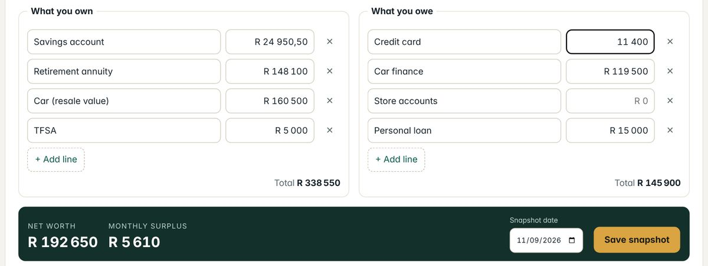

Before quoting, I installed WordPress 7.1.4, built the custom layer your brief needs (finance snapshots, programme access windows, per-client resources, the dashboard), and tested it with fictional clients. The screenshots are the running site, and the numbers were measured on it.
PayPal doesn't support ZAR, and store owners report that WooCommerce's PayPal gateway won't switch on for a rand-priced store. Monthly renewals through PayPal alone would bill South African clients in a foreign currency. Payfast, the official WooCommerce gateway, charges in rand, works with WooCommerce Subscriptions (with ad hoc payments enabled), and accepts international Visa and Mastercard. PayPal stays only if some clients need it.



8 plugin or setting 13 custom, drafted and tested 1 training
Your rule starts at the agreed programme date. Fix: the portal stores access windows from that date, and LearnDash expiry stays off.
LearnDash's optional switch deletes course and quiz data, and it can't be recovered. Fix: expiry only removes access. Tests show progress, worksheets, snapshots and the login unchanged.
Extend Access can't pass a group end date. Fix: renewals add a window from where access ends (no gap, no double days) and reopen the course on the same request.

| Check (real browser sessions) | Result |
|---|---|
| Logged-out API call | 401 |
| /me/snapshots?user_id= another client | own rows only |
| Client calling the coach route | 403 |
| Coach reading another coach's client | 403 + logged |
| Direct URL to a private resource file | 403 |
| Another client's download link | 403 |
| Expired client logs in, sees history | yes |
| Clients sent away from wp-admin | yes |
| POPIA export / erase via WordPress tools | one client only, audited |
Plus 29 plugin tests. Speed: snapshot save ~3 ms, nightly sweep of 300 clients ~0.6 s (SQLite sandbox).
Stage 1 · prototype on staging
Stage 2 · complete system, live
Handover
Staging access on your host (or permission to create it); admin access to WordPress; your Payfast merchant sandbox details, or I'll walk you through opening the account; one sample week of course material (video links and worksheet) to build the course shell around.